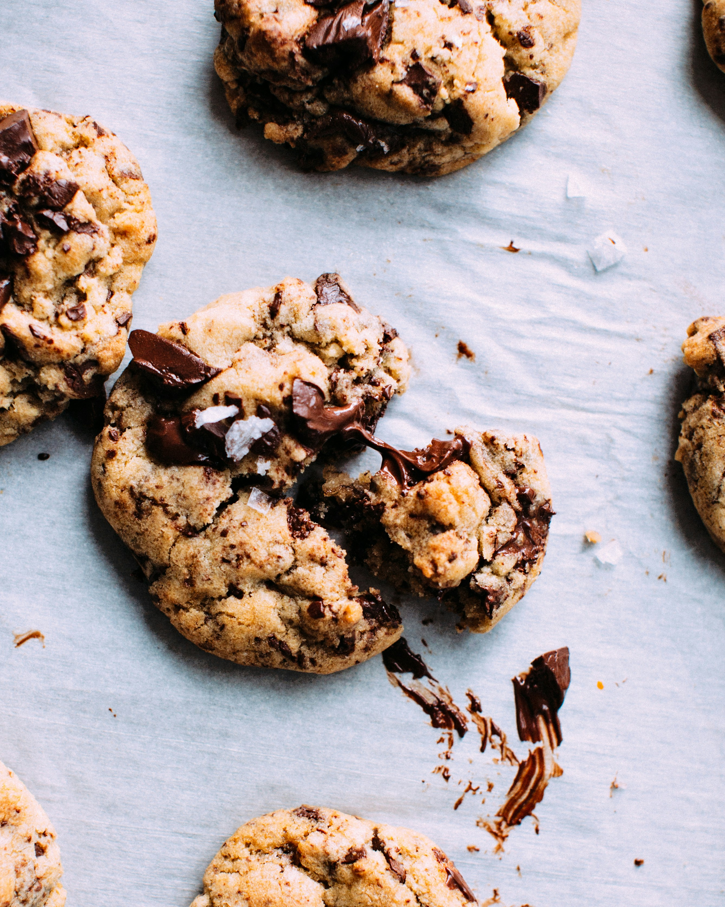

Home
Chocolate Chip Cookies

Description
These classic chocolate chip cookies are soft, chewy, and loaded with chocolate chips.
Perfect for satisfying your sweet tooth, they are easy to make and loved by everyone.
Ingredients
- 1 cup unsalted butter, softened
- 1 cup granulated sugar
- 1 cup packed brown sugar
- 2 large eggs
- 1 teaspoon vanilla extract
- 3 cups all-purpose flour
- 1 teaspoon baking soda
- 1/2 teaspoon salt
- 2 cups semisweet chocolate chips
Instructions
- Preheat the oven to 375°F (190°C).
- In a large bowl, cream the butter and both sugars until light and fluffy.
- Beat in the eggs one at a time, then stir in the vanilla.
- In a separate bowl, whisk together the flour, baking soda, and salt.
- Gradually add the dry ingredients to the wet ingredients, mixing until just combined.
- Stir in the chocolate chips.
- Drop rounded tablespoons of dough onto ungreased baking sheets.
- Bake for 9-11 minutes, or until the edges are golden brown.
- Allow to cool on the baking sheet for a few minutes before transferring to a wire rack.